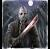

Kedves olvasók, ezt a
szép sorozatot ma kaptam egy távoli ismerőstől emailban. Mivel remek apropóm van a közzétételre -
elvégre Gyurcsótány Fegyenc kapott egy vaskos valagbarúgást a választóktól -, hát megosztom
veletek, hátha egyet-kettőt még nem ismertek...
A faviccekért és az
ezredik ismétlésért felelősséget nem vállalok (ezzel a felelőtlen magatartással már gyakorlok arra,
hátha kormányra kerülök...).
Egy napon meghal Gyurcsány Ferenc. De minden virág
elhervad a sírján.
Először hívják a holland kertészeket, de bármilyen tudományos módszert is alkalmaznak, az összes tulipán napokon belül
elszárad. A francia kertészek is felsülnek, sőt a bolgárok is. Hosszú tanakodás után helikoptert menesztenek
Bábolnára a Pista bácsiért, mert ő mindennek tudója. El is hozzák az öreget, lehajol
a sírhoz, felvesz egy
göröngyöt, majd sokáig porlasztgatja az ujjai között és erőteljesen csóválja a fejét. Mindenki feszülten figyel,
mikor végre az öreg
megszólal: - Itt
soha az életben nem fog nőni semmi, nemhogy virág! - Miért ? - kérdezik
kétségbeesetten. -
Mert túl mélyen van a gané!...
Gyurcsány felriad álmából, mire kérdi a felesége :
- Mi baj, Ferikém?
- Jaj, ne is mondd!
Borzasztó álmom volt. - Mi volt az? - Képzeld, azt álmodtam, hogy dübörgött a gazdaság, az emberek jól
éltek
... - És mi ebben a
rossz? - Az, hogy
már nem én voltam a miniszterelnök...
Gyurcsány megáll az Apró-villa spájzában őrzött
Lenin-kép előtt, és így
szól: - Drága Lenin
elvtárs, ezt nagyon elkúrtuk. Mi lészen itt a megoldás? Leszól Lenin a falról : - Semmi gond fiam, helyet cserélünk! Engem
leakasztanak, téged meg fel...
A radiológus magához hívja a beteg Fletót :
- Uram, van egy jó
és egy rossz hírem, melyikkel kezdjem? - Essünk túl rajta, halljam a rosszat. - A röntgenfelvételen egy nagy kiterjedésű
tüdőtumor látszik. - És mi a jó? - Photoshoppal el tudom tüntetni...
Gyurcsányt elrabolja az Al-Kaida, és százmillió
dolláros váltságdíjat
követelnek érte. Eltelik egy hét, semmi válasz. Eltelik még egy hét, még mindig semmi válasz. A harmadik hét után
kétségbeesett üzenet
érkezik a külügyminisztériumba: - Na jó, akkor legalább azt mondják meg, maguknak mégis mennyit
érne meg, ha sosem
látnák viszont ezt az alakot?
Gyurcsány beszédet tart a Művészetek Palotájában.
A nézőközönség sorai
közt : - Hölgyem, ha
megkérhetném: levenné a kalapját, mert nem látom jól Gyurcsány elvtársat! - Hölgyem, kérem húzódjon egy kicsit már odébb,
hogy tökéletesen lássam! - Hölgyem, ha megkérhetném, még egy kicsit arrébb ülne? Mire a hölgy: - Mégis mit képzel uram? Távcsövet ne
adjak? - Nem,
köszönöm. Az van a puskámon.
Délután hatalmas dugó az M1-esen. Helikopterek,
rendőrség, mentők, a
tűzoltók, meg persze millió autó! A sorok közt fiatal ember kopog az ablakokon. - Mi történhetett? - kérdezi a
sofőr. - Valami arab
terroristák elrabolták Gyurcsány Ferencet ! 10 millió dollárt követelnek, és ha nem kapják meg,
lelocsolják benzinnel és elégetik! Én most arra gyűjtök! - A többiek mennyit adtak? - Hát nem mindenki egyformán, de az előtted álló 2
litert ...
Két atyafi találkozik Gyurcsány
gyomrában. - Te
hogyan kerültél ide? - kérdezi kíváncsian az egyik. - Tudod, én ellentmondani merészeltem a nagy
vezérnek, mire úgy begurult, hogy lenyelt mérgében. És te? - Én lentről küzdöttem fel
magam...
Bush büszkén meséli német és magyar kollegájának,
hogy az amerikai emberek átlagban 3.000 dollárt keresnek. 2000-ből meg lehet élni,
az államot pedig nem
érdekli, mire költik a maradék ezret. Mire Andrea Merkel : a németek 2.000 eurót keresnek, 1.500-ból meg lehet
élni és az államot
egyáltalán nem érdekli, mire költik a maradék 500-at. Gyurcsány: a magyarok 80 ezret keresnek, 160 ezerből meg
lehet élni, az államot
pedig nem érdekli, honnan szerzik a hiányzó 80 ezret. (Csak az APEH-ot...)
Egy szép napon magához rendeli az Úr az amerikai,
az orosz elnököt és
Gyurcsányt. Összehúzza szemöldökét és így szól hozzájuk: "Ti odalent a Földön egy egész életen át csak
hazudoztatok. A világot
ezért elárasztotta a gonoszság, a kapzsiság és a hazugság, nem érdemlitek meg, hogy éljetek! Most menjetek
haza és mondjátok el a
népeteknek, hogy egy hét múlva özönvizet bocsátok a földre és mindenki el fog
pusztulni..."
A
három fószer hazamegy.
Az amerikai elnök összehívja a kongresszust : "Uraim, van egy
jó, meg egy rossz
hírem. A jó hír, hogy akiben mindig is bíztunk, Isten létezik - sőt, beszéltem is vele. A rossz hír az,
hogy egy hét múlva
elpusztítja a világot, ezért menjetek békével haza és élvezzétek az utolsó hetet..."
Az orosz elnök összehívja a Dumát: "Uraim, van két
rossz hírem. Az első,
hogy amit mindig is hirdettünk sajnos nem igaz, mert Isten létezik, beszéltem is vele. A másik, hogy egy hét
múlva elpusztul a
világ, ezért menjetek haza és térjetek meg..."
Gyurcsány összehívja az MSZP-t: "Elvtársaim, van
két jó hírem! Mint ti
is tudjátok, hosszú évek óta azt hazudjuk, hogy elfogadjuk Isten létezését. Nos, ezt jól tettük, ugyanis
tényleg van Isten és én beszéltem is vele. A másik jó hír, hogy szívélyes, négyszemközti
találkozónkon maga az
Úr közölte velem, hogy a döntése végleges: Orbán Viktor nem lesz többé Magyarország
miniszterelnöke..."
Horn Gyula talál egy csodalámpát. Gyorsan
megdörzsöli, mire kijön belőle egy szellem, és így szól: - Mit kívánsz, kis gazdám ? Mire Horn mérgesen: - Kisgazda az öreganyád
!
Menekül a csiga az erdőből. Találkozik a rókával.
- Mi van csiga,
belőttél, hogy így tepersz? - Á, dehogy. Itt az APEH, vagyonvizsgálat lesz. Nekem is saját
házam van, az
asszonynak is saját háza van, meg a gyerekeknek is. Sürgősen le kell innen lépnünk. Elgondolkodik a róka, majd ő is futni kezd.
Találkozik a gólyával. - Mi van róka, hova futsz ilyen gyorsan ? - Nem hallottad ? Kiszállt az APEH az erdőbe,
vagyonvizsgálatra. Hát
nekem is drága bundám van, az asszonynak is, a gyerekeknek is. Ezek minket azonnal
lecsuknak. Több se
kell a gólyának. Fogja a családot és elrepülnek Afrikába. A pávián épp ejtőzik (építi a kubai típusú
kommunizmust ). De látván a gólyák érkezését nem állja meg, hogy meg ne
kérdezze: - Nem
vagytok egy kicsit koraiak az idén, Te gólya ? - Sajnos el kellett gyorsan menekülnünk az erdőből, mert megszállta
az APEH-kommandó. Hát
tudod, én évente fél évet vagyok külföldön, sőt az egész család fél évet van külföldön. Ezt én soha nem tudnám
nekik megmagyarázni,
hogy miből telik nekem. - Tudod gólya, nekem fáintos lenne ott nálatok, Magyarországon. Nem
elég, hogy csupasz a
seggem, még vörös is!
Újsághirdetés (nem vicc, valódi!):
"MSZP-s (esetleg
SZDSZ-es) szavazókat keresek, akik mostantól átvállalják a családomra eső többletkiadásokat. Tőkeerősek
jelentkezését várom,
cserében szóbeli dicséretben részesítem őket, amiért jól választottak. Jelige: Lendületben az ország!"
Választások után nagy fekete autó indul vidékre
kampánykörútra, benne
Gyurcsány Ferenccel és a kormány 4 másik politikusával. Egyszer csak az autó nagy sebességgel nekicsapódik
egy fának. Rendőrök,
mentők, tűzoltók azonnal a helyszínre sietnek, de csak a totálkárosra tört autót találják, a politikusoknak
csak hűlt helye. A
közelben azonban meglátják a parasztbácsit, aki hatalmas földhalom mellett támaszkodik az ásójára.
Megkérdezik tőle: -
Bátyám, látta a balesetet? - Láttam én. - S hová lettek a politikusok? - Elástam őket. - Meghaltak? - De meg ám. - S egy sem maradt életben? - Hát, Gyurcsány és az a másik... Kóka, azt mondta
hogy ő még él, de én
ezeknek már semmit sem hiszek!
Két elitélt beszélget a
börtönben. - Te
politikai vagy, vagy köztörvényes? - Politikai. - Mit csináltál? - Járt a szám. Tudod, vízvezetékszerelő vagyok, és behívtak a MSZP
pártbizottságra, hogy
javítsam meg a csapot. Én alaposan átvizsgáltam mindent, és akkor azt mondtam: az egész rendszert le
kellene
cserélni.
Gyurcsány Ferenc elpatkol, és menne már a Mennyországba. Bekopog. Kijön Szent Péter és mondja neki:
- Ferenc, sajna nem jöhetsz be!
- Miért?
- Hát, eléggé félrevezető életed volt, ígérgettél ezt-azt, fűt-fát, aztán kiderült, hogy hazudtál. De van egy lehetőséged. Egy napot el kell töltened a pokolban, egyet a Mennyben és aztán szabadon dönthetsz, hol szeretnél lenni az idők végezetéig.
Gyurcsány lemegy körülnézni a pokolba. Ott az összes cimborája, martiniznak, ökröt sütnek, golfoznak, jobbnál-jobb nők veszik őket körbe, megy az orgia, verik a blattot, pöfékelnek, jégbe hűtött pezsgő, jég whiskyvel. Nem akar hinni a szemének. Miután eltöltött egy napot, felnéz a Mennybe is.
Látja, hogy hatalmas a békesség, az emberek kiegyensúlyozottak, minden tökéletesen működik az ott levők teljes megelégedésére. Lejár a nap és döntenie kell. Kérdi Szent Péter:
- Nos hol szeretnél élni?
- Hááát lehet, hogy böszmeség, a földieknek ne mondjátok meg, de én inkább a poklot választom.
- Rendben, legyen hát.
Lemegy a pokolba, maga Lucifer nyitja ki a kaput, ahogy belép, be is csapódik mögötte. Látja ám, hogy a barátai koszosak, büdösek, a szemétből esznek, híre-hamva sincs a pár nappal ezelőtti gondtalan életnek. A családtagjaikat meg éppen nyárson sütik a volt MSZMP-sek.
Odafordul Luciferhez:
- Hát te Lucifer, lári-fári! Tegnapelőtt nem ez volt itt!
- Ja, Fletókám, az volt a kampány! Most viszont már választottál!
Mire Gyurcsány: Na, ezt jól elkúrtam!!!
Közre adta: Vidéki Be-tone
25. Tenzit
2008-03-11 20:48:29

A vidéki úton vágtat Gyurcsány szolgálati kocsija, és hirtelen elüt egy malacot. Gyurcsány ráparancsol a sofőrre hogy menjen be a tanyára és mondja el a gazdának mi történt, fizesse ki a jószágot, de igyekezzen mert sürgős a dolguk. Eltelik fél óra, majd egy, sőt másfél óra múltán sem jön a sofőr. Majd bő két óra múlva feltűnik, de tök részeg, alig áll a lábán, és egy nagy kosarat cipel, tele kolbásszal, szalonnával, borral. Gyurcsány nekitámad hogy hol volt ennyi ideig, és mi a fenét csinált? Azt mondja a sofőr: Amit kért, főnök. Bementem a gazdához, és mondtam neki hogy Gyurcsány Ferenc sofőrje vagyok, és elütöttem a disznót.
A photoshoppos tüdőrákkezelés a legjobb. Nagyon találó. :)
G. W. Bush, Nicolas Sarkozy és Gyurcsány Ferenc Isten elé járulnak egy-egy kérdéssel.
Bush kezdi: "Uram! Kérlek mondd el, mikor szűnik meg szerte a világon az USA-ellenes hangulat!"
Isten: "Már rég halott leszel, mire az megtörténik"
Ezután Sarkozy jön: "Mikor élnek végre a franciák teljes békében és egyenlőségben?"
Isten: "Már rég halott leszel, mire az megtörténik"
Végül Gyurcsány lép elő: "Mikor hoznak már a reformjaim valami pozitív eredményt?"
Isten megvakarja a fejét és így szól: "Én már rég halott leszek, mire az megtörténik..."
(Ez eredetileg Gorbacsovval és a Perestroika eredményeivel volt, meg persze akkori politikusokkal.)
23. arax
2008-03-10 21:08:11
Itt van még néhány vicc az elvtársakról, ha érdekli a műkedvelő hölgyeket, urakat és biztosurakat. http://v.grocceni.com/orosz.html
22. ST33L!
2008-03-10 13:52:26
Köszi jó viccek de tényleg:D régóta kerestem eg yiylen gyűjteményt:D
Pár viccnél azért jól látszik, hogy a történelem csakugyan ismétli önmagát. :))
De szerencsére még mindig tudunk ezeken nevetni, sőt, a Photoshopos egyenesen jelenkori telitalálat, rendszerkritika! :-DDD
A szadesz már jó ideje alázza a maszopot, de ennyire direkt, mint most a homeless kinézetű Horn és az a másik, most először.
Pontosan tudták, hogy végig kamera előtt voltak és üzentek.
Szerintem a háttérhatalomnak kész a forgatókönyve. El Quró nyőzelmi potenciál nélküli ballaszttá vált, akiből ideális bűnbak lesz.
És akkor a szimpatizánsok Márianosztrára szerveznek majd tüntetést FREE FLETÓ táblákat lengetve. De szép is lenne! :)))
17. 17. Törölt felhasználó
2008-03-10 07:46:56
Karácsonyra nem jött meg a megváltás ezektől, dfe a húsvétban még bízhatunk: